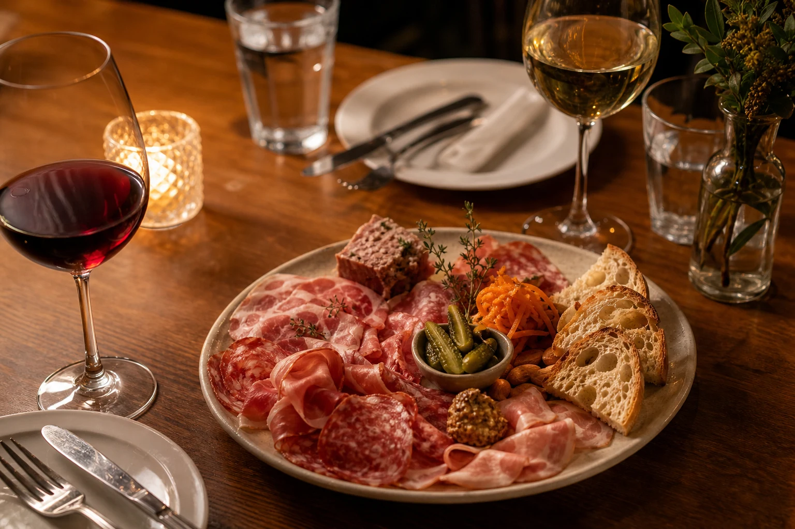
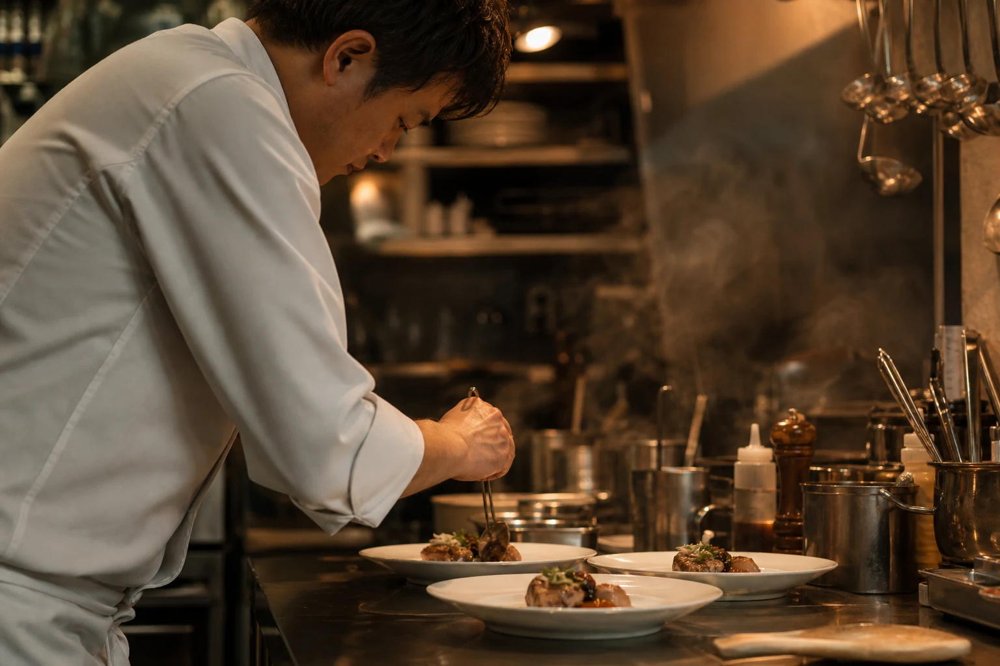
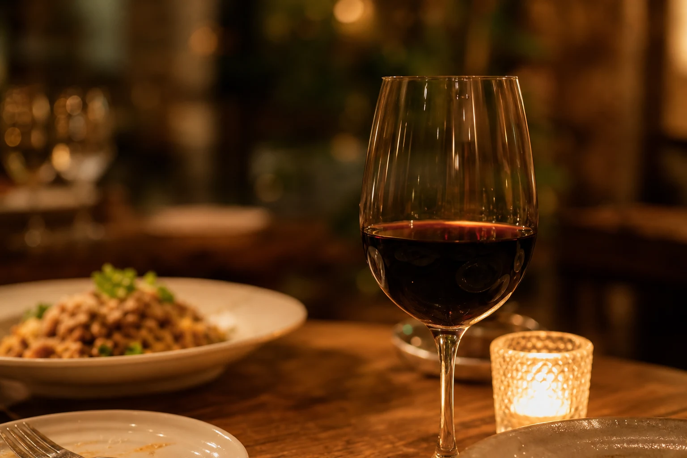

Story 01
火を入れすぎない。気取らせすぎない。
Fraviel Table が大事にしているのは、素材の芯がちゃんと残ること。香りを立たせる火入れと、会話の邪魔をしない空気感で、肩の力を抜いたフレンチを届けます。


カウンター越しに立ちのぼる湯気、皿に落ちるソースの音、グラスに伝う赤ワインの光。その全部が、今夜のごちそうの一部です。気分はちょっと特別、でも過ごし方はいつも通り。それくらいがちょうどいいと考えています。
シェフ楠井透真が組み立てるのは、フレンチの技法を土台にしながら、食材の輪郭をまっすぐ見せる皿。火を入れた香ばしさ、ソースの余韻、ワインの抜け感まで、夜のテンポで整えています。
一皿ごとに語りすぎないこと。余白があるから、ワインも会話もちゃんとおいしくなる。
Chef Toma Kusui